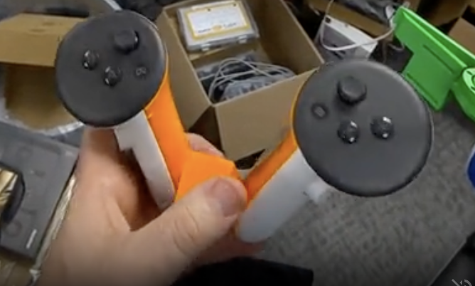
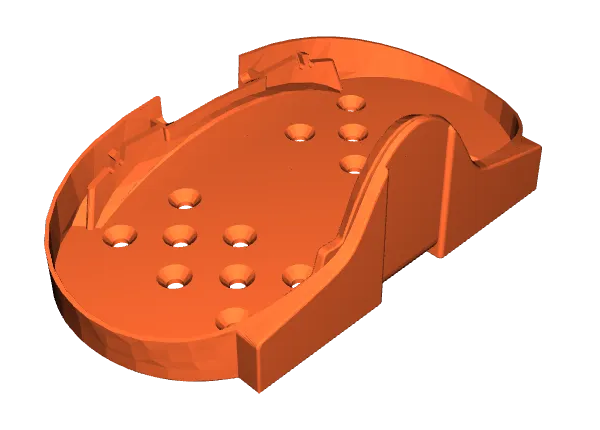

← Jack Dubie
January 23, 2026
Meta Quest 3S UMI implementation
We collected robot training data with an exoskeleton: a person wears it, does the task, and the arm's joint encoders record the motion. It worked, but it cost about $8,000 per rig, it was bulky and heavy to wear for long sessions, and our calibration checks with it were off by 8–15 mm.
A Meta Quest 3S already tracks its two controllers in 3D from the infrared LEDs on them, for about $500. The question was whether that tracking is good enough to train robot policies on. That came down to three questions.
Why the Quest 3S
We compared five ways to capture a person's hand motion. Each is scored 1–5 on each attribute (5 is best), and the weighted score combines them with the weights shown under each column. On a phone, scroll the table sideways for the details.
| Solution | Weighted score | BOMweight 20% | Accuracyweight 20% | Degradation detectableweight 15% | Ergonomicsweight 10% | Mobilityweight 10% | Not environment-dependentweight 10% | Occlusion-freeweight 10% | Footprintweight 5% |
|---|
| Exoskeleton | 2.40 | 1~$8,000 per rig | 28–15 mm on calibration checks | 2Calibration drift is silent | 1Bulky and heavy to wear for long sessions | 3Wearable, but a big rig to move | 5Mechanical: unaffected | 5None: joint encoders | 2Large rig at the workstation |
|---|
| EMF tracking | 2.45 | 2Several $k (est.) | 3mm-level near the transmitter (est.) | 1Distortion is unreliable to measure | 3Light sensors, but cabled to the base unit | 2Works only near the transmitter | 1Metal nearby, like many of the machines we need to operate around, distorts it | 5None: no line of sight needed | 4Small sensors + transmitter |
|---|
| OptiTrack | 3.10 | 1$10k+ for a camera rig (est.) | 5Sub-mm | 5Lost markers reported immediately | 5Light passive markers | 1Fixed install | 3Sunlight, reflective surfaces | 2Markers must be seen by several cameras | 1Cameras around the workspace |
|---|
| Lighthouse VR tracker | 3.50 | 4~$1k (est.) | 4A few mm (est.) | 3Reports lost tracking; reflections are silent | 4Light tracker pucks | 3Base stations to set up at each site | 3Sunlight, reflective surfaces | 3Needs line of sight to a base station | 3Base stations + trackers |
|---|
| Meta Quest 3S | 3.95 | 5~$500 | 41–3 mm median, p99 up to 9 mm | 4Non-trivial occlusions are detectable via jumps you see when you sample pose at a very high frequency | 3A headset worn for the whole session | 5Inside-out: no external setup | 3Lighting, featureless surroundings | 2Controllers must be in view of the headset | 5Headset + two controllers |
|---|
Scores and weights are ours. Exoskeleton and Quest figures come from our own measurements, below and in the earlier exoskeleton work; figures marked “est.” are rough estimates, not measurements.
Three questions
- Controller → headset: how accurately does the headset track the controller LEDs?
We joined two controllers rigidly with a 3D-printed bracket, so their true distance and relative rotation never change, and looked for variance in the position and rotation the headset reported between them. With the LEDs in view of the headset's cameras, the error was about 3 mm, and the distance between them, 84.74 mm, stayed within 1.45 mm at p99. That measures how consistently the headset places one controller relative to the other, not absolute accuracy.

The test rig: two controllers locked together by an orange 3D-printed bracket.
- Headset → room: how accurately does the headset track itself in the room?
We mounted the headset itself on a YAM arm with a 3D-printed mount and moved it through scripted trajectories. The arm's joint encoders and forward kinematics give the ground-truth pose, so the error in a hand-eye calibration between the two measures the headset's inside-out tracking directly. On 12 fast trajectories, including a pick and place at 2 seconds a pick, the median error was 1–3 mm per trajectory and the p99 1.7–9.2 mm. Getting there took better time alignment between the two streams; a slow trajectory before that fix was at 6.9 mm median, 10.9 mm p99.
The headset riding on the arm through a scripted trajectory, at 4× speed.

The 3D-printed mount that holds it there.
- Occlusions: what happens when the headset loses sight of a controller, and can we tell?
The Quest OS does report a tracking failure, but only after a 3–5 second timeout. During a brief occlusion it keeps reporting a position and orientation, carried by the controller's IMU alone, and that position drifts quickly. When the LEDs come back into view, the tracked position snaps back, so an occlusion shows up as a jump in position.
To catch it, we sampled the pose at a very high rate, fast enough to tell that kind of jump apart from a quick hand movement. We confirmed it on purpose, then counted jumps over 10 mm per episode: a full bag-packing episode in the office had none, and later ones had one and four. The conversion pipeline now checks every episode automatically, writing a histogram of pose jumps and a warning into the episode's folder.
That was enough to build on. The Quest rig that came out of it cut the bill of materials 94%, from about $8,000 to $500, and tracking error 20%, while matching the exoskeleton rig's policy performance.
A policy trained with no robot data
A policy trained only on Quest demonstrations, picking tablets into the box at 4.4 seconds per pick. It never saw a single frame of robot-collected fine-tuning data.
The Quest demos went through the same retargeting pipeline we'd built for the exoskeleton, which uses offline iterative learning control to make the robot's motion match the human's.